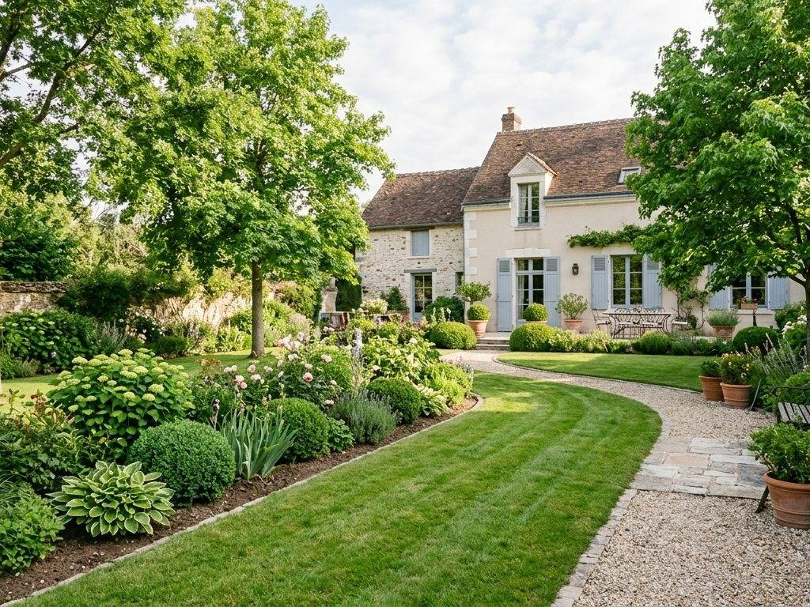

Paysagiste au Pecq (78)
Création et entretien de jardins au Pecq
Le Faune aménage et entretient les jardins au Pecq, dans les Yvelines. Parlez-nous de votre projet.
Nos prestations
Des prestations pour votre jardin
Création, plantations, entretien : choisissez ce dont votre jardin a besoin.
Création de jardins
Création de massifs, d'allées et de pelouses, adaptée à la forme de votre terrain et à vos envies.
En savoir plusPlantations
Choix et mise en terre d'arbres, d'arbustes et de vivaces pour structurer et fleurir votre jardin.
En savoir plusEntretien de jardin
Tonte, désherbage et ramassage des feuilles pour garder un jardin net au fil des saisons.
En savoir plusTaille de haies
Taille des haies et des arbustes pour des lignes nettes et des végétaux en bonne santé.
En savoir plusÀ propos
Un paysagiste au Pecq
Guillaume Berthe dirige Le Faune, au Pecq, dans les Yvelines. L'entreprise aménage et entretient des jardins.
Pour parler de votre projet, appelez directement ou envoyez une demande depuis la page de contact.
- Entreprise basée au Pecq
- Aménagement et entretien de jardins
- Devis par téléphone ou en ligne
Contact
Un projet de jardin ? Parlons-en.
Décrivez votre projet par téléphone ou depuis le formulaire de contact.
06 95 03 85 96